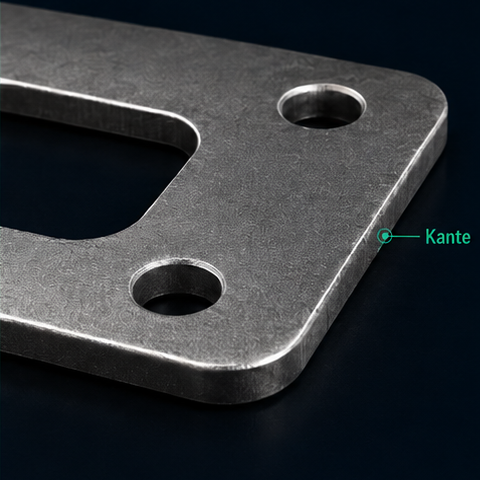
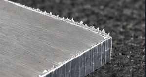

Manual data transfer
Request and quoting processes remain difficult to automate, even though much of the information already exists.
Automatable RFQ context for STEP files
Why re-enter manufacturing data if it can travel with the STEP file? STEP-Q structures material, quantity, process assumptions, and other RFQ metadata so people and systems work from the same request context.
Why STEP-Q?
STEP is an established standard for CAD geometry and product-related data. STEP-Q complements that exchange with a small, documented RFQ metadata layer: material, manufacturing intent, quantities, surfaces, tolerances, inspection requirements, and other information relevant to quoting and technical handover.
Request and quoting processes remain difficult to automate, even though much of the information already exists.
Engineering, purchasing, manufacturing, and external partners clarify details again instead of using the data directly.
CAD, quoting, platform forms, and manufacturing systems use separate data models.
Technical characteristics are interpreted differently, making quoting assumptions hard to trace.
What gets structured?
STEP-Q captures information that is often interpreted manually or pieced together from accompanying documents.
Wet grinding is one of many common methods for deburring parts. It must be specified whether one or both sides should be deburred. Missing this detail leads to unnecessary questions. STEP-Q can provide this information in a machine-readable form.

| Process | Deburring |
|---|---|
| Options | Back side / Both sides |
| Goal | Burr-free edges |
| Suitable for | Laser-cut and sheet-metal parts |
| Edge condition | Edges are burr-free but usually remain sharp. |
| Surface note | Mechanical deburring may change the surface. |
| Relevant to selection | Yes, for quoting and manufacturing |
Deburring removes raised edges (burrs) that can form during laser cutting.
The edges become burr-free but usually remain sharp.
Mechanical deburring may change the surface.
The deburring method matters for quoting and manufacturing.
Front side
(not deburred)
Front side
(deburred)
t = material thickness

Deburring removes raised edges (burrs), making them burr-free but usually leaving them sharp.
How it works
CAD, PDM, ERP, or platforms provide existing information such as material, quantity, or process context.
Users can check values, add missing information, and consciously approve the handover.
STEP-Q metadata travels with the STEP file or through a documented sidecar profile.
Importers, portals, and quoting systems can map the data and process it for their needs.
Who is it for?
STEP-Q aims to help wherever CAD information is reinterpreted for requests, quotations, production planning, or software logic. Development partners help validate these handovers with real data.
Pass on manufacturing intent in a structured way instead of losing it later in emails, drawings, or forms.
Reduce follow-up questions, make quoting assumptions more transparent, and evaluate relevant fields faster.
Pre-fill request forms automatically and make incomplete records easier to identify.
Extend CAD, CAM, ERP, and PDM interfaces with clear RFQ context for downstream processes.
Tooling preview
This first website draft shows the direction: select a STEP file, review metadata, write it in a STEP-Q-compliant format, and pass it to target systems. Actual upload, viewer, or processing features will be provided separately.
holydraft
holydraft initiated STEP-Q and is developing the ecosystem around it: the specification, use cases, importer/exporter concepts, and technical consulting for CAD, PDM, ERP, and platform integrations.
Many handovers work today only because people manually sort, check, and transfer technical information.
STEP-Q aims to structure data that already exists but does not yet flow cleanly into downstream processes.
The goal is less friction between design, engineering, requests, quoting, and manufacturing.
FAQ
AP242 is a powerful, comprehensive standard for product data. STEP-Q does not replace AP242; it complements STEP-based processes with practical RFQ metadata: manufacturing intent, request-related information, and fields for quoting, purchasing, production planning, and platform workflows.
STEP-Q is not intended to guess materials automatically. Instead, a defined designation is assigned deliberately. Internal material systems can be connected to STEP-Q-compliant data through mapping tables or translation databases.
No. STEP-Q makes provided information more structured and traceable, but it does not replace expert review. The sender, exporter, importer, and their respective processes remain responsible for accurate, complete, and approved data.
Much of the information relevant to STEP-Q already exists in CAD models, parameters, or internal systems. An exporter can read it, display it for review, and pass it on in a structured form. This can reduce follow-up questions, manual transfer, and the risk of errors later.
STEP-Q is designed for versioned development. New values can be added; importers can use versions, mappings, and aliases to determine which specification was used to create a file.
Not necessarily. If a portal or request process supports STEP-Q, fields such as material, quantity, process, surface finish, or manufacturing intent can be imported from the file, reviewed, and supplemented.
STEP-Q can use completeness profiles. A profile defines which details are needed for a specific use case. Missing required information can then be highlighted or marked as incomplete.
Responsibility